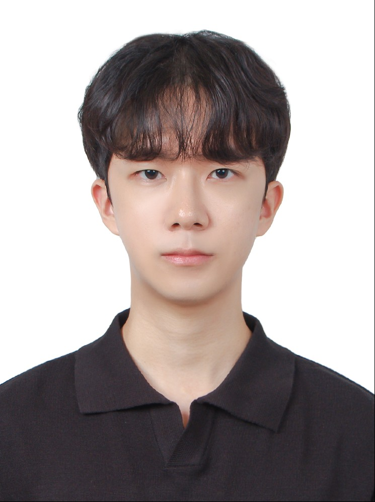

Languages / Frontend
CC++C#
JavaPythonDart
JavaScriptHTML5CSS3
FlutterVite
01 — Profile
기본에 충실한 코드와 명확한 사용자 흐름을 중요하게 생각하며, 새로운 기술을 실제 프로젝트 안에서 빠르게 익힙니다.

증명사진 3:402 — Capabilities
프로젝트에서 활용한 기술을 개발 영역별로 정리했습니다.
03 — Experience
논문에서 배운 개념을 코드로 확인하며 딥러닝의 학습과 추론 과정을 익혔습니다.
딥러닝 관련 논문을 읽고 주요 개념과 모델 구조를 정리했으며, Python 기반 실습을 통해 딥러닝 모델의 학습과 추론 과정을 경험했습니다.
04 — Activities
꾸준히 참여하고 책임을 맡으며 함께 움직이는 법을 배운 교내 활동입니다.
컴퓨터공학과 배드민턴 소모임에서 정기 활동에 참여했으며, 2학년 1학기 회장을 맡았습니다.
교내 배드민턴 동아리에서 활동했으며, 3학년 1학기 부회장을 맡았습니다.
05 — Selected Work
아이디어 기획부터 데모 구현, 시스템 연결까지 팀과 함께 완성한 프로젝트입니다.
U&I 학습 성향을 기반으로 개인별 학습 경로를 설계하고, 정답 대신 단계별 힌트를 제공하여 자기주도 학습을 지원하는 AI 튜터를 기획했습니다.
Team건국대학교 컴퓨터공학과 TIM
KeywordsAI · LLM · Personalized Learning · U&I
AI로 사장님의 조리시간 판단을 보조하고, 해당 시간을 실제 배차·픽업·배달 순서 계산에 연결하여 고객·사장님·라이더의 서비스 흐름을 동기화했습니다.
RoleFrontend · Demo Flow · State Synchronization
StackVite · JavaScript · FastAPI · Oracle Database 23ai · OCI GenAI · Vector Search
카메라와 LiDAR로 주변 환경을 인식하고 이상 상황을 탐지해 관제 화면과 알림으로 전달하는 자율 순찰 방범 로봇을 개발하고 있습니다.
RoleFrontend Monitoring Dashboard · Backend & Autonomous Navigation
StackROS 2 · Nav2 · LiDAR SLAM · YOLO · Raspberry Pi · Flask
06 — Contact
프로젝트와 협업에 관한 이야기를 언제든 편하게 남겨주세요.